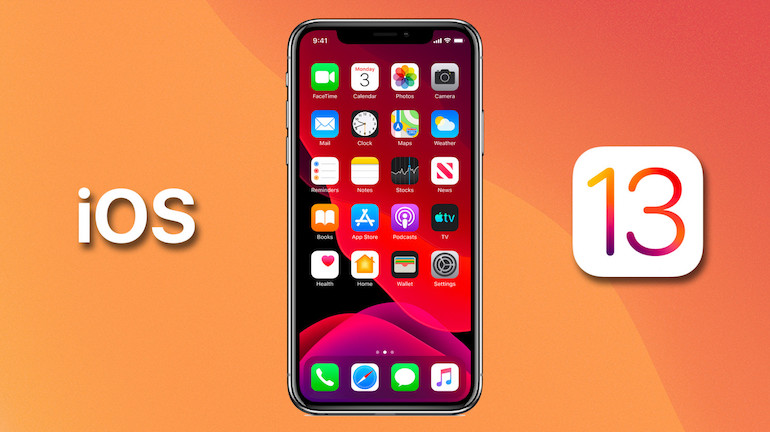
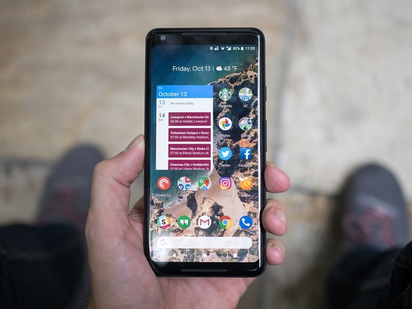

Nejrozšířenější:
iOS
iOS je mobilní operační systém pro telefony iPhone společnosti Apple, původně vyvinutý na základě macOS pro původní iPhone, který se dostal na trh v roce 2007.
Jednou z nejnovějších vezí iOSu je iOS 12, který byl oznámen 4.června 2018 spolu s telefony iPhone XS a iPone XS Max.
Android
Android je mobilní operační systém založený na jádře Linuxu, který je dostupný jako otevřený software. Je používán na smartphonech, tabletech, chytrých televizích a dalších zařízeních. Jeho vývoj vede firma Google.
Windows Phone
Windows Phone je obchodní název mobilního operačního systému firmy Microsoft. Windows Phone se poprvé dostal na trh 21. října 2010 a je nástupcem systému Windows Mobile.

Java ME
Jedna z několika základních platforem Javy.Java ME bylo vyvinuto firmou Sun Microsystems a nahrazuje dřívější technologii. Jejím cílem bylo nabídnout sbírku API určenou pro vývoj software pro malá zařízení a zařízení s omezenými prostředky.
Symbian
Symbian OS je navržený do mobilních telefonů značky Nokia. Je to základní operační systém, jež doplňují knihovny, grafické uživatelské rozhraní a referenční implementace nástrojů, které vytvořila firma Symbian Ltd.
BlackBerry
BlackBerry je kombinace služeb a hardware vyvinutá firmou Research in Motion umožňující neustálou synchronizaci dat v handheldu a na firemním serveru.
Kindle
Který je vytvořený pro čtečky a tablety.